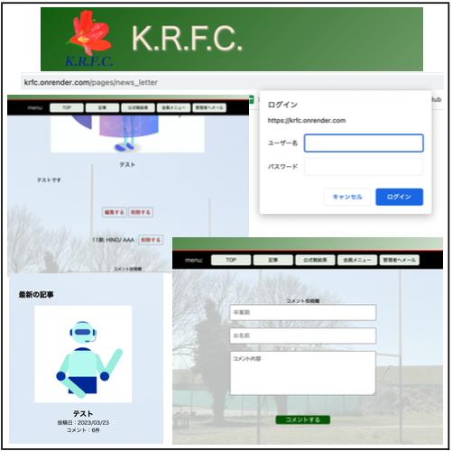
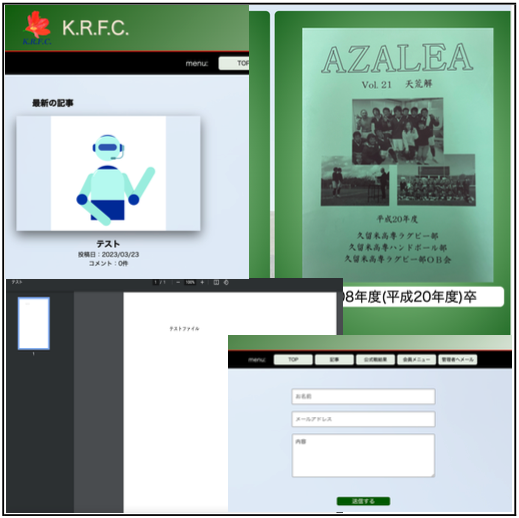

KRFC(記事投稿アプリ)
開発環境
HTML / css / JavaScript / Ruby / Ruby on Rails / MySQL / GitHub / Render / Visual Studio Code
-
概要
制作時間 60時間 URL https://krfc.onrender.com ID 0000 (一部のページのみ) PASS 0000 (一部のページのみ) -
動作テスト
テスト用アカウント
mail master@KRFC.com PASS master00 テスト用クレジットカード情報
番号 4242 4242 424 24242 期限 12/24 CVC 123
OUTLINEアプリケーションの概要
以下の課題を解決する機能を実装しました。
課題と解決手法
 既存のWebページは静的サイトで年に1回だけ更新されるため、近況がわかりづらい
既存のWebページは静的サイトで年に1回だけ更新されるため、近況がわかりづらい
 記事投稿機能を実装し、画像と近況報告をいつでも簡単にできるようにした
記事投稿機能を実装し、画像と近況報告をいつでも簡単にできるようにした
OB・OGは全国に点在しており、コミュニケーションを取る機会が少ない
投稿された記事に対して、誰でもコメントができる機能を実装
紙媒体で発行、送付されてくる部報が、住所の情報が古い会員の元には届かない
Webページからいつでも部報を閲覧できるように、PDFファイルの閲覧機能を実装した
住所情報を更新したくても、誰に連絡すればいいか、また連絡先がわからない
Webサイト管理者に対してメールを送信する機能を実装した
部費の支払いは振り込み、手渡しの手段しかなく、援助しようとしても手間がかかる
クレジットカードによる支払い機能を実装した
-
開発に至った経緯
既存のWebページをリニューアルし、部及び、OB・OGのコミュニケーション活性化を目的として作成しました。
-
開発で工夫したこと
1.実際の運用を想定し、記事に対するコメントはユーザー登録しなくても可能にしました。
2.登録されるユーザーは管理者を想定し、管理者は記事の投稿、編集、削除、不適切なコメントの削除を可能にしました。
3.PDFファイルは個人情報も含まれるため、個別でBasic認証を実装しました。
4.記事のもりあがり具合を示す、コメント数の表示機能を実装しました。
5.タイトルのロゴは、デザイナーである友人に作成を依頼しました。
-
努力した点（カリキュラム外で学習した点）
1.CSSはテンプレートを使用せず、自分でレイアウトを考えて実装しました。
2.メール送信機能の実装方法を独学で実装しました。
3.PDFファイルの閲覧機能を独学で実装しました。